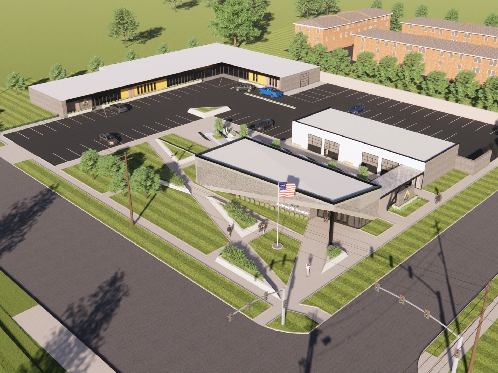

This page highlights the current Designated Charity and target project, which has been thoroughly vetted, and will be actively monitored for its ability to have a lasting impact on people and communities in the surrounding Kansas City area. Water Stone works on a net-zero model by which 100% of its proceeds, after expenses, are donated to the Designated Charity each year. Our clients have an opportunity to come alongside Water Stone and support the Designated Charity in a variety of ways as well, from providing team building and volunteer opportunities for their employees to making their own separate donations.
Veterans Navigation Campus
Build Project Size = $5M
A new centralized location for Veterans tapping into all veteran related Service Providers, including housing, emergency assistance, mental health, legal aid, job skills, healthcare, workforce training, substance abuse, VA navigation, and more.
Part of the Veterans Community Project.
Learn More About VCP
Designated Charity Considerations
Focused within the Kansas City metropolitan area
Established, sustainable charities with excellent leadership
Community impacting projects with clear objectives and tangible outcomes
Focused on humanitarian relief and/or improvement efforts
No affiliation with Water Stone Leadership (conflict-free)
Engagement with Water Stone is both an investment in your team and your community!
The point is this: whoever sows sparingly will also reap sparingly, and whoever sows bountifully will also reap bountifully. Each one must give as he has decided in his heart, not reluctantly or under compulsion, for God loves a cheerful giver. - 2 Corinthians 9:6-7